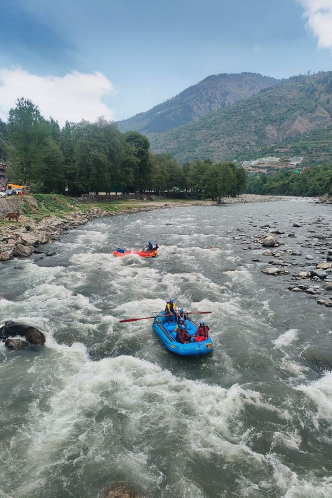

Weekend Getaway Destinations in India
Jaipur
Preferred Transport: Road (Approx. 5-6 hours from Delhi)
Attractions:
- Amer Fort
- Hawa Mahal
- City Palace
- Jantar Mantar
- Local Markets

Munnar
Preferred Transport: Road (Approx. 4-5 hours from Kochi)
Attractions:
- Tea Plantations
- Eravikulam National Park
- Mattupetty Dam
- Anamudi Peak
- Echo Point
Pondicherry
Preferred Transport: Road (Approx. 3-4 hours from Chennai)
Attractions:
- French Quarter
- Promenade Beach
- Auroville
- Sri Aurobindo Ashram
- Paradise Beach

Rishikesh
Preferred Transport: Road (Approx. 6-7 hours from Delhi)
Attractions:
- Laxman Jhula
- Triveni Ghat
- Neelkanth Mahadev Temple
- Adventure Sports (Rafting, Bungee Jumping)
- Yoga and Meditation Centers

Goa
Preferred Transport: Road or Flight (Approx. 1-2 hours from Mumbai)
Attractions:
- Beaches (Baga, Calangute, Anjuna)
- Churches (Basilica of Bom Jesus, Se Cathedral)
- Water Sports (Jet Skiing, Parasailing)
- Nightlife
- Spice Plantations
Shimla
Preferred Transport: Road or Train (Approx. 7-8 hours from Delhi)
Attractions:
- The Ridge
- Jakhu Temple
- Shimla Mall Road
- Kufri
- Annandale